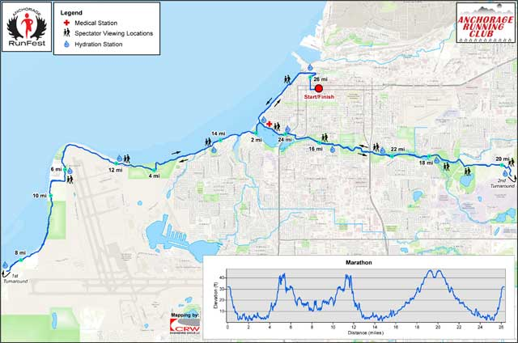
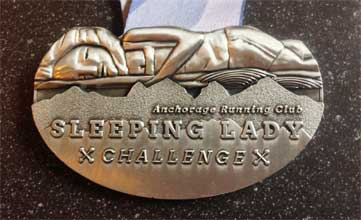

Humpy's Marathon Relay
Sunday, August 22, 2021 -- 8:30 AM
Course Overview
The 26.2 mile course begins in the heart of downtown Anchorage. Runners head west on 6th Avenue, north on H Street, then straight ahead on Christensen Drive to 2nd Avenue where the course turns left to join the Tony Knowles Coastal Trail. They run past Westchester Lagoon, Earthquake Park, Postmark Drive and Point Woronzof. Runners turn around at a point known by locals as “the Blue Bridge.” They run back north to Westchester Lagoon where they veer right (east) on the Chester Creek Trail. From the Chester Creek turnaround (the roundabout at the base of the hill beyond, or east of, the bridge to East High School) runners return to the lagoon and head back to the finish line in downtown Anchorage.
The marathon course is USATF certified.

Number of Team Members
The Marathon Relay may be run by two, three, or four individuals -- in any division of legs you desire. For example, a team of two runners could alternate legs or both run two consecutive legs. Or one runner could run three legs and the other run one. In a team with three runners, two could each run one leg and a third runner complete two legs. You get the idea! The legs must be run in order but who runs them is up to you.
The team captain will need to register the team. However, all team members will eventually need to go online to sign the waiver.
Exchange Zones
Four-person marathon relay teams will tag their teammates at two different exchange zones. Relay exchange one and two are both located at Postmark Drive along the Tony Knowles Coastal Trail. Exchange zone three is east of the Goose Lake bridge along the Chester Creek Trail -- adjacent to the People Mover bus stop on Northern Lights Boulevard.
Leg #1: Start to Exchange Zone #1: 4.4 miles
Leg #2: Exchange Zone #1 to Exchange Zone #2: 7.8 miles
Leg #3: Exchange Zone #2 to Exchange Zone #3: 6.6 miles
Leg #4: Exchange Zone #3 to Finish: 7.4 miles
Team members must tag each other within the marked exchange zone. Incoming runners should not leave the exchange zone until their outgoing runner has tagged them. Numbers must be worn on the front of the body and be visible when entering the exchange zone.
Transportation is NOT provided to and from exchange zones. Runners are responsible for their own transportation.
Field Limit
The marathon relay field is limited to the first 150 teams.
Start/Finish
The marathon starts and finishes on 6th Avenue between F and G Street adjacent to the Performing Arts Center in downtown Anchorage.
Time Cut-off
Fourth leg runners must finish by 3:30 PM in order to receive an official time. The fourth leg runner must reach mile 23 (Valley of the Moon aid station) by 2:30 PM, as well as cross the finish line by 3:30 PM for the team to be considered an official finisher.
Registration Goodies
- Long-sleeve technical shirt (see 2019 shirt below)
- Finisher's medal (see 2019 medal below)
- Professional timing
- Food and beverage at the finish line
Awards
Awards are given to the first place team in each division: male, female, coed, masters (age 50 and over; male, female or coed -- simply the first masters team), military and corporate. Awards will be distributed in Town Square Park. All awards are based on gun times -- the time elapsed from the sound of the start gun to when a runner crosses the timing mat at the finish line.
All awards are based on chip times -- the time elapsed from whenthe first runner crosses the timing mat at start line till when the final runner crosses the timing mat at the finish line.
Sleeping Lady Challenge
The Anchorage Runfest is one of four Anchorage Running Club yearly events. Successful completion of eligible races in three of these four events can qualify a runner for the unique Sleeping Lady Challenge medal. See more information regarding the Sleeping Lady Challenge.
Race Day Support
See our Race Day Support page for a full listing of course support and finish line amenities.
PAGE LINKS

 well organized
well organized